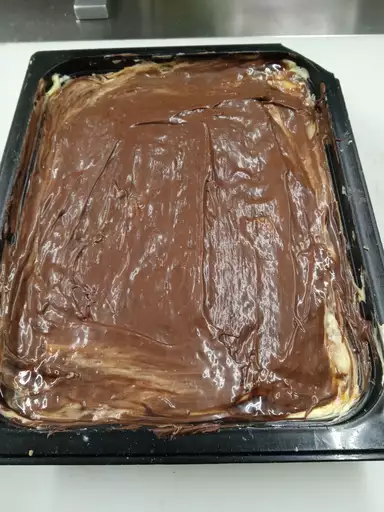

Eclair Cake

Description
This éclair cake is a very quick and simple no-bake dessert. It uses graham crackers and a pudding mixture. It tastes just like an éclair, but there is enough for a crowd! It is a great recipe for children who are learning to cook since there is no baking involved or any power kitchen tools. Just a bowl and a spoon!
Ingredients
- Milk: This rich and creamy eclair cake starts with three cups of milk.
- Whipped topping and pudding mix: A container of frozen whipped topping and two packages of instant vanilla pudding mix are the convenient secret ingredients.
- Graham crackers: Layers of graham crackers break up the creamy layers with welcome crunch.
- Chocolate frosting: The recipe calls for a package of chocolate frosting, but you can make homemade frosting if you want to go the extra mile.
Steps
- Stir the milk, whipped topping, and pudding mix together.
- Line a baking pan with graham crackers.
- Spread half of the whipped topping mixture on top of the graham crackers.
- Repeat once, ending with a layer of graham crackers.
Chill the cake, cover with frosting, then chill again.